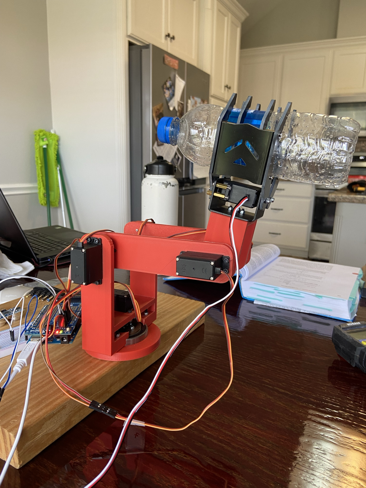

Project 08
Robotics Engineering
Robotic Arm Object Relocator
3D Printed Robotic Arm & Automated Conveyor System
2022.09 - 2022.12
Project Goal
3D Printing 기반 로봇 팔 설계/제작 및 피드백 제어 시스템 구현. 레이더 센서로 물체 감지 후 컨베이어 벨트 간 자동 이송.
System Workflow
- 레이더 센서가 작업 공간 내 물체 감지
- 비례 제어로 물체까지의 각도 계산
- 물체를 집어 지정 위치로 이송
- 홈 위치로 복귀 후 반복
Hardware
- • Arduino Mega + Adafruit PWM Shield
- • 6x 서보모터 (5개 팔, 1개 그리퍼)
- • 초음파 센서 (End Effector 장착)
- • 베어링 (베이스 하중 분산)
Budget
$173.60 총 비용
Tech Stack
Arduino
C/C++
SolidWorks
MATLAB/Simulink
3D Printing
Feedback Control System
Proportional ControlDistance Calculation
dobj = larm + lend + dsensor
where larm = L sin(θ)
P-Controller
u[k] = u[k-1] + kp(e[k] - e[k-1])
e[k] = dref - dact, kp = 2
kp Value Tuning Results
| kp | Result |
|---|---|
| 0.5 | High oscillation |
| 1.0 | Moderate oscillation |
| 2.0 | Optimal (No oscillation) |
목표: 물체와 2인치 거리 유지
Results
물체 감지 → 이송 성공
비선형성 보정
부드러운 움직임
Future Work
• 서보 6→3개 감소
• 경량 그리퍼 적용
• 적응 제어 도입
Project Images


